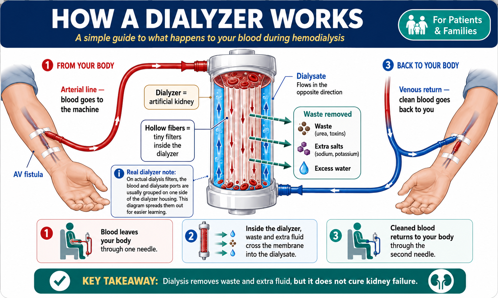
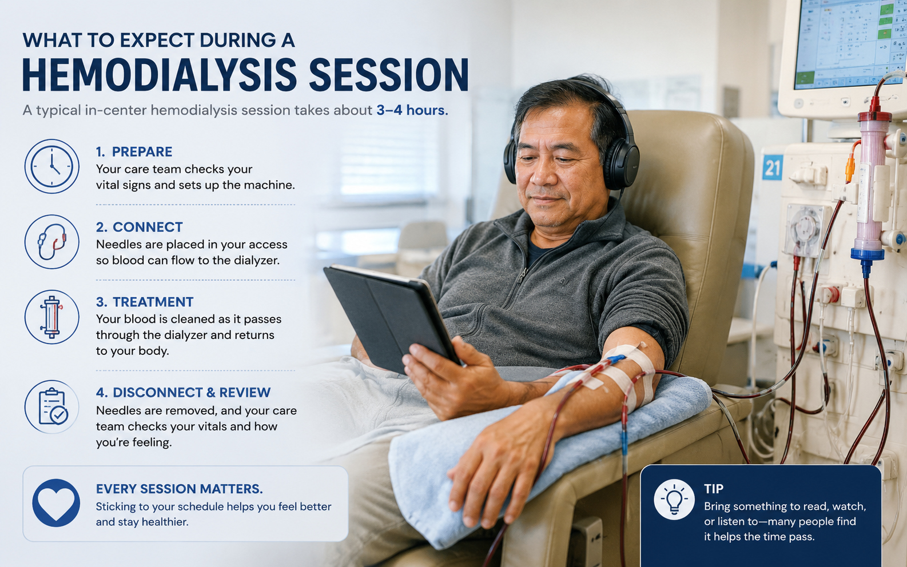
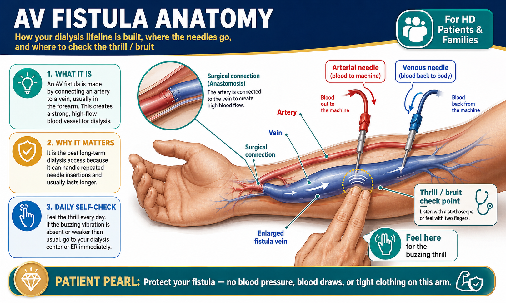
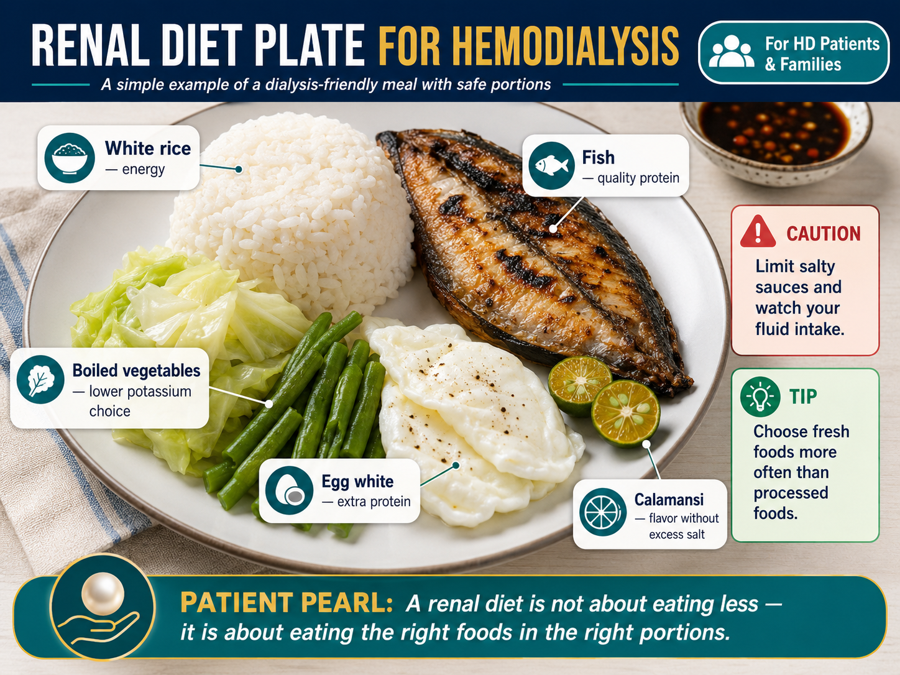
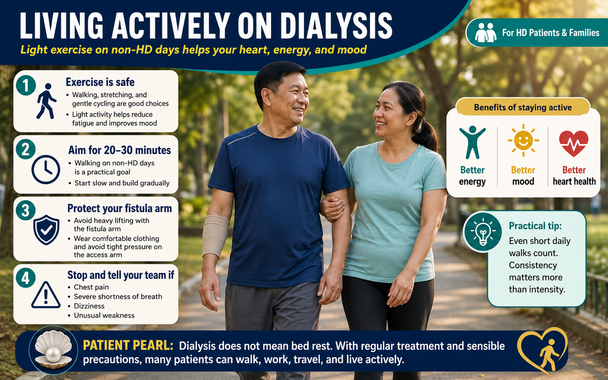

What Dialysis Does — and What It CannotAng Magagawa ng Diyalisis — at ang Hindi Nito MagagawaAng Mahimo sa Diyalisis — ug ang Dili Niya Mahimo Ing Magagawa ning Diyalisis — at ing Ali Nini Magagawa
Each hemodialysis session removes approximately 2 kg of fluid and clears toxins your kidneys can no longer excrete. Missing sessions allows dangerous build-up of potassium and fluid between treatments.Bawat sesyon ng hemodialysis ay nag-aalis ng humigit-kumulang 2 kg ng likido at nililinis ang mga lason na hindi na kayang ilabas ng inyong mga bato. Ang pagkawala ng mga sesyon ay nagdudulot ng mapanganib na pag-iipon ng potassium at likido sa pagitan ng mga paggamot.Ang matag sesyon sa hemodialysis nagkuha og mga 2 kg nga tubig ug naghinlo sa mga lason nga dili na makagawas sa inyong mga kidney. Ang pagkawala sa mga sesyon nagpatigbabaw sa peligrosong pag-ipon sa potassium ug tubig taliwala sa mga pagtambal. Bawat sesyon ning hemodialysis ya nag-aalis ning humigit-kumulang 2 kg ning likido at nililinis ing deng lason a ali a kayang ilabas ning inyu deng batu. Ing pagkaala ning deng sesyon ya nagdudulot ning mapanganib a pag-iipon ning potassium at likido king pagitan ning deng paggamut.
Dialysis is a life-sustaining treatment that replaces the filtering function of your failed kidneys. Three times a week, a machine removes waste products, excess fluid, and dangerous electrolytes from your blood — preventing the toxin buildup that would otherwise be fatal. It is not a cure, but it allows you to live actively, work, and be with your family.Ang diyalisis ay isang panggagamot na nagpapanatili ng buhay na pumapalit sa tungkulin ng pag-filter ng inyong mga nabigong bato. Tatlong beses sa isang linggo, ang isang makina ay nag-aalis ng mga basura, labis na likido, at mga mapanganib na electrolyte mula sa inyong dugo — pinipigilan ang pag-iipon ng lason na maaaring maging nakamamatay. Hindi ito lunas, ngunit nagbibigay-daan ito sa inyo na mabuhay nang aktibo, magtrabaho, at makasama ang pamilya.Ang dialysis usa ka pagtambal nga nagpreserba sa kinabuhi nga mipuli sa trabaho sa pag-filter sa inyong mga napakyas nga kidney. Tulo ka beses sa usa ka semana, ang usa ka makina nagkuha sa mga basura, sobrang tubig, ug mapeligro nga mga electrolyte gikan sa inyong dugo — nagpugong sa pag-ipon sa lason nga mahimong makamatay. Dili kini lunas, apan nagtugot kini kaninyo nga mamuhay nga aktibo, magtrabaho, ug makauban ang pamilya. Ing diyalisis ya metung a panggagamot a nagpapanatili ning biye a pumapalit king tungkulin ning pag-filter ning inyu deng nabigong batu. Tatlong beses king metung a lutu, ing metung a makina ya nag-aalis ning deng basura, labis a likido, at deng mapanganib a electrolyte mula king inyu daya — pinipigilan ing pag-iipon ning lason a maaaring maging nakamamatay. Ali ini lunas, ngarud nagbibigay-daan ini king inyo a mabuhay nang aktibo, magtrabaho, at makasama ing pamilya.
Hemodialysis (HD) uses a dialyzer — often called an artificial kidney — to filter your blood outside your body. Blood passes through millions of tiny hollow fibers surrounded by dialysis fluid (dialysate). Waste and fluid move across the membrane; clean blood returns to you.Ang hemodialysis (HD) ay gumagamit ng dialyzer — madalas na tinatawag na artipisyal na bato — upang i-filter ang inyong dugo sa labas ng inyong katawan. Ang dugo ay dumadaan sa milyun-milyong maliliit na hollow fiber na napapalibutan ng dialysis fluid (dialysate). Ang mga basura at likido ay dumadaan sa membrane; ang malinis na dugo ay bumabalik sa inyo.Ang hemodialysis (HD) naggamit og dialyzer — kasagaran gitawag nga artipisyal nga kidney — aron i-filter ang inyong dugo sa gawas sa inyong lawas. Ang dugo moagi sa minilyon nga gamay nga hollow fiber nga gilibotan sa dialysis fluid (dialysate). Ang mga basura ug tubig moagi sa membrane; ang limpyo nga dugo mobalik kaninyo. Ing hemodialysis (HD) ya gumagamit ning dialyzer — madalas a tinatawag a artipisyal a batu — upang i-filter ing inyu daya king labas ning inyu bangkî. Ing daya ya dumadaan king milyun-milyong maliliit a hollow fiber a napapalibutan ning dialysis fluid (dialysate). Ing deng basura at likido ya dumadaan king membrane; ing malinis a daya ya bumabalik king inyo.

What dialysis does wellAng magagawa ng diyalisis nang mabutiAng mahimo sa diyalisis nga maayo Ing magagawa ning diyalisis nang mabuti
Removes uremic toxins (urea, creatinine), controls potassium and acid levels, removes excess fluid, and prevents life-threatening complications of kidney failure. When adequate (spKt/V ≥1.4), it significantly reduces hospitalizations and mortality.Nag-aalis ng mga uremic toxin (urea, creatinine), kinokontrol ang antas ng potassium at asido, nag-aalis ng labis na likido, at pinipigilan ang mga mapanganib na komplikasyon ng pagkabigo ng bato. Kapag sapat (spKt/V ≥1.4), makabuluhang binabawasan nito ang mga hospitalisasyon at namamatay.Nagkuha sa mga uremic toxin (urea, creatinine), nagkontrol sa antas sa potassium ug asido, nagkuha sa sobrang tubig, ug nagpugong sa mga peligrosong komplikasyon sa pagkapakyas sa kidney. Kon sapat (spKt/V ≥1.4), makita nga nagpamenos kini sa mga hospitalisasyon ug kamatayon. Nag-aalis ning deng uremic toxin (urea, creatinine), kinokontrol ing antas ning potassium at asido, nag-aalis ning labis a likido, at pinipigilan ing deng mapanganib a komplikasyon ning pagkabigo ning batu. Nung sapat (spKt/V ≥1.4), makabuluhang binabawasan nini ing deng hospitalisasyon at namamatay.
What dialysis cannot replaceAng hindi kayang palitan ng diyalisisAng dili mapulihan sa diyalisis Ing ali kayang palitan ning diyalisis
Dialysis does not produce erythropoietin (causing anemia), activate vitamin D (causing bone disease), or remove all uremic toxins (especially protein-bound ones). These require additional medications and supplements alongside dialysis.Ang diyalisis ay hindi gumagawa ng erythropoietin (nagdudulot ng anemya), hindi nagpapagana ng vitamin D (nagdudulot ng sakit sa buto), o hindi inaalis ang lahat ng uremic toxin (lalo na ang mga nakatali sa protina). Ang mga ito ay nangangailangan ng karagdagang gamot at supplement kasabay ng diyalisis.Ang dialysis dili nagbuhat og erythropoietin (nagdulot sa anemia), dili nagaktibo sa vitamin D (nagdulot sa sakit sa bukog), o dili nagkuha sa tanan nga uremic toxin (labi na ang mga nakadugtong sa protina). Kini nanginahanglan og dugang nga mga gamot ug supplement kaupod sa dialysis. Ing diyalisis ya ali gumagawa ning erythropoietin (nagdudulot ning anemya), ali nagpapagana ning vitamin D (nagdudulot ning sakit king buto), o ali inaalis ing amin ning uremic toxin (lalo a ing deng nakatali king protina). Ing deng ini ya nangangailangan ning karagdagang gamut at supplement kasabay ning diyalisis.
What Happens During Each SessionAno ang Nangyayari sa Bawat SesyonUnsa ang Mahitabo sa Matag Sesyon Ano ing Nangyayari king Bawat Sesyon
Arrival and assessmentPagdating at pagsusuriPag-abot ug pagsusi Pagdating at pagsusuri
Your weight, blood pressure, heart rate, and temperature are checked. Your weight is compared to your dry weight — the difference tells the team how much fluid to remove. Always tell the nurse about any symptoms you had since your last session.Sinusuri ang inyong timbang, presyon ng dugo, tibok ng puso, at temperatura. Ang inyong timbang ay inihahambing sa inyong dry weight — ang pagkakaiba ay nagsasabi sa koponan kung magkano ang likidong aalisin. Laging sabihin sa nars ang anumang sintomas na naranasan ninyo mula sa inyong huling sesyon.Gisusi ang inyong timbang, presyon sa dugo, tibok sa kasingkasing, ug temperatura. Ang inyong timbang gi-compare sa inyong dry weight — ang kalainan nagsugilon sa team kung pila ka tubig ang kuhaon. Kanunay isulti sa nars ang bisan unsang sintoma nga nasinati ninyo sukad sa inyong katapusang sesyon. Sinusuri ing inyu timbang, presyon ning daya, tibok ning pusu, at temperatura. Ing inyu timbang ya inihahambing king inyu dry weight — ing pagkakaiba ya nagsasabi king koponan nung magkano ing likidong aalisin. Pirming sabihin king nars ing anumang sintomas a naranasan ninyo mula king inyu huling sesyon.
NOTE — What is dry weight?TALA — Ano ang dry weight?TALA — Unsa ang dry weight?TALA — Ano ing dry weight?
Your dry weight is the target weight set by your dialysis team — the weight you should reach after a full session with all excess fluid removed. It is not fixed forever; it is reassessed whenever your muscle mass or nutritional status changes significantly. Always report unintended weight loss or changes in appetite to your team so dry weight can be recalibrated.Ang inyong dry weight ang target na timbang na itinakda ng inyong koponan sa diyalisis — ang timbang na dapat ninyong maabot pagkatapos ng isang buong sesyon na inalis na ang lahat ng sobrang likido. Hindi ito permanente; ito ay muling sinusuri tuwing makabuluhang nagbabago ang inyong masa ng kalamnan o katayuan sa nutrisyon. Laging iulat sa inyong koponan ang hindi sinasadyang pagbaba ng timbang o pagbabago sa gana sa pagkain upang ma-recalibrate ang dry weight.Ang inyong dry weight ang target nga timbang nga gitakda sa inyong koponan sa dialysis — ang timbang nga kinahanglan ninyong maabot human sa usa ka tibuok sesyon nga gitangtang na ang tanan nga sobrang tubig. Dili kini permanente; kini giusab pag-usab sa matag higayon nga makita nga nagbag-o ang inyong masa sa kalamnan o kahimtang sa nutrisyon. Kanunay ireport sa inyong koponan ang dili tinuyo nga pagkunhod sa timbang o pagbabag-o sa gana sa pagkaon aron ma-recalibrate ang dry weight.Ing inyu dry weight ing target a timbang a itinakda ning inyu koponan king diyalisis — ing timbang a dapat ninyung maabot kapabanuan ning metung a buong sesyon a inalis ne ing amin sobrang likido. Ali ini permanente; ini ya muling sinusuri tuwing makabuluhang nagbabago ing inyu masa ning kalamnan o katayuan king nutrisyon. Pirming iulat king inyu koponan ing ali sinasadyang pagbaba ning timbang o pagbabago king gana king pamangan upang ma-recalibrate ing dry weight.
Access connectionKoneksyon ng accessKoneksyon sa access Koneksyon ning access
Two needles are inserted into your AV fistula (or your catheter is connected). One draws blood out; one returns it. This is the most uncomfortable part for most patients — tell your nurse if you are anxious or in pain.Dalawang karayom ang inilalagay sa inyong AV fistula (o ang inyong catheter ay kinokonekta). Ang isa ay humihigop ng dugo palabas; ang isa ay nagbabalik nito. Ito ang pinaka-hindi komportableng bahagi para sa karamihan ng mga pasyente — sabihin sa inyong nars kung kayo ay nababalisa o nasa sakit.Duha ka dagom ang gisal-ot sa inyong AV fistula (o ang inyong catheter gikonekta). Ang usa nagkuha sa dugo palabas; ang usa nagbalik niini. Kini ang pinaka-dili komportable nga bahin alang sa kadaghanan sa mga pasyente — isulti sa inyong nars kon kamo nabalaka o nasakit. Dalawang karayom ing inilalagay king inyu AV fistula (o ing inyu catheter ya kinokonekta). Ing metung ya humihigop ning daya palabas; ing metung ya nagbabalik nini. Ini ing pinaka-ali komportableng bahagi para king kadaklan ning deng pasyente — sabihin king inyu nars nung kayu ya nababalisa o nasa sakit.
Filtration — 4 hoursPag-filter — 4 na orasPag-filter — 4 ka oras Pag-filter — 4 a oras
Blood circulates through the dialyzer continuously. You can read, watch TV, sleep, or talk. Avoid sleeping through the entire session as staff need to monitor you. Blood pressure may drop (intradialytic hypotension) — report dizziness or cramping immediately.Ang dugo ay patuloy na umiikot sa dialyzer. Maaari kayong magbasa, manood ng TV, matulog, o makipag-usap. Iwasang matulog sa buong sesyon dahil kailangan kayong bantayan ng mga kawani. Ang presyon ng dugo ay maaaring bumaba (intradialytic hypotension) — agad iulat ang pagkahilo o pananakit ng kalamnan.Ang dugo naglibot sa dialyzer nga padayon. Mahimo kamong magbasa, manood sa TV, matulog, o makig-istorya. Likayi ang pagtulog sa tibuok sesyon tungod kay kinahanglan kayong bantayan sa mga kawani. Ang presyon sa dugo mahimong mubaba (intradialytic hypotension) — dayon ireport ang pagkahilo o panghubag sa kalamnan. Ing daya ya patuloy a umiikot king dialyzer. Maaari kayung magbasa, manood ning TV, matulog, o makipag-usap. Iwasang matulog king buong sesyon dahil kailangan kayung bantayan ning deng kawani. Ing presyon ning daya ya maaaring bumaba (intradialytic hypotension) — agad iulat ing pagkahilo o pananakit ning kalamnan.
Disconnection and post-HD checkPagdiskonekta at pagsuri pagkatapos ng HDPagdiskonekta ug pagsusi human sa HD Pagdiskonekta at pagsuri kapabanuan ning HD
Needles are removed and pressure applied to the fistula sites. Post-HD weight and BP are checked. Do not stand up quickly — blood pressure is often lower after HD. Sit for a few minutes first.Iniaalis ang mga karayom at inilalapat ang presyon sa mga lugar ng fistula. Sinusuri ang timbang at presyon ng dugo pagkatapos ng HD. Huwag tumayo nang mabilis — ang presyon ng dugo ay madalas na mas mababa pagkatapos ng HD. Umupo muna ng ilang minuto.Gikuha ang mga dagom ug gibutang ang presyon sa mga lugar sa fistula. Gisusi ang timbang ug presyon sa dugo human sa HD. Ayaw tindog dayon — ang presyon sa dugo kasagaran mas ubos human sa HD. Lingkod una og pipila ka minuto. Iniaalis ing deng karayom at inilalapat ing presyon king deng lugar ning fistula. Sinusuri ing timbang at presyon ning daya kapabanuan ning HD. Eka tumayo nang mabilis — ing presyon ning daya ya madalas a mas mababa kapabanuan ning HD. Umupo muna ning ilang minuto.

Never miss or shorten a sessionHuwag kailanman lagpasan o putulin ang isang sesyonAyaw gayud priki o putla ang usa ka sesyon Eka kailanman lagpasan o putulin ing metung a sesyon
Each missed HD session allows toxins and potassium to accumulate dangerously. Missing even one session significantly increases the risk of life-threatening hyperkalemia, fluid overload, and cardiac arrest. If you cannot come for any reason, call your dialysis center immediately.Ang bawat napalampas na sesyon ng HD ay nagpapahintulot sa mga lason at potassium na mapanganib na mag-ipon. Ang pagkapalampas ng kahit isang sesyon ay makabuluhang nagpapataas ng panganib ng nakamamatay na hyperkalemia, pagbaha ng likido, at cardiac arrest. Kung hindi kayo makadating sa anumang dahilan, tumawag agad sa inyong dialysis center.Ang matag napasagdi nga sesyon sa HD nagtugot sa mga lason ug potassium nga peligrosong mag-ipon. Ang pagpasagdi bisan usa ka sesyon makita nga nagpadako sa risgo sa mapeligrong hyperkalemia, pagbaha sa tubig, ug cardiac arrest. Kon dili kamo makaabot sa bisan unsang rason, dayon tawga ang inyong dialysis center. Ing bawat napalampas a sesyon ning HD ya nagpapahintulot king deng lason at potassium a mapanganib a mag-ipon. Ing pagkapalampas ning kahit metung a sesyon ya makabuluhang nagpapataas ning panganib ning nakamamatay a hyperkalemia, pagbaha ning likido, at cardiac arrest. Nung ali kayu makadating king anumang dahilan, tumawag agad king inyu dialysis center.
Protecting Your AV Fistula — Your LifelinePangalagaan ang Inyong AV Fistula — Ang Inyong BuhayPangalaga sa Inyong AV Fistula — Ang Inyong Kinabuhi Pangalagaan ing Inyu AV Fistula — Ing Inyu Biye
Your AV fistula (arteriovenous fistula) is created surgically by connecting an artery to a vein, usually in your forearm. This creates a high-flow vessel that can withstand repeated needle insertions. It is your most important asset as a dialysis patient.Ang inyong AV fistula (arteriovenous fistula) ay nilikha sa pamamagitan ng operasyon sa pamamagitan ng pagkonekta ng arteria sa ugat, karaniwang sa inyong braso. Lumilikha ito ng daluyan na may mataas na daloy na kayang tiisin ang paulit-ulit na pagturok ng karayom. Ito ang inyong pinakamahalagang yaman bilang pasyente sa diyalisis.Ang inyong AV fistula (arteriovenous fistula) gihimo pinaagi sa operasyon pinaagi sa pagkonekta sa arteria ngadto sa ugat, kasagaran sa inyong bukton. Nagmugna kini og daluyan nga adunay taas nga daloy nga makapas sa paulit-ulit nga pagsal-ot sa dagom. Kini ang inyong pinakaimportante nga kabtangan isip pasyente sa dialysis. Ing inyu AV fistula (arteriovenous fistula) ya nilikha king pamamagitan ning operasyon king pamamagitan ning pagkonekta ning arteria king ugat, karaniwang king inyu braso. Lumilikha ini ning daluyan a atin matas a daloy a kayang tiisin ing paulit-ulit a pagturok ning karayom. Ini ing inyu pinakamahalagang yaman bilang pasyente king diyalisis.

How to check your fistula every dayPaano suriin ang inyong fistula araw-arawUnsaon pagsusi sa inyong fistula matag adlaw Paano suriin ing inyu fistula aldo-aldo
Place two fingers gently over your fistula and feel for a "thrill" — a vibrating buzz. You can also listen with your ear close to the skin for a "bruit" — a whooshing sound. If the thrill or bruit is absent or weaker than usual, go to your dialysis center or ER immediately. This may indicate clotting.Ilagay nang marahang dalawang daliri sa ibabaw ng inyong fistula at maramdaman ang "thrill" — isang vibrating na ugong. Maaari rin kayong makinig nang malapit sa balat para sa "bruit" — isang tunog na parang agos. Kung ang thrill o bruit ay wala o mas mahina kaysa karaniwan, pumunta agad sa inyong dialysis center o ER. Maaaring ito ay nagpapahiwatig ng pamumuo ng dugo.Ibutang ang duha ka tudlo nga hinay sa ibabaw sa inyong fistula ug bation ang "thrill" — usa ka nagvibrate nga ngalingali. Mahimo usab kamong mamati nga duol sa panit alang sa "bruit" — usa ka tunog nga morag agos. Kon ang thrill o bruit wala o mas huyang kaysa kasagaran, adto dayon sa inyong dialysis center o ER. Mahimong nagpakita kini og pamuo sa dugo. Ilagay nang marahang dalawang daliri king ibabaw ning inyu fistula at maramdaman ing "thrill" — metung a vibrating a ugong. Maaari rin kayung makinig nang malapit king balat para king "bruit" — metung a tunog a parang agos. Nung ing thrill o bruit ya ala o mas mahina kaysa karaniwan, pumunta agad king inyu dialysis center o ER. Maaaring ini ya nagpapahiwatig ning pamumuo ning daya.
DO — protect your fistulaGAWIN — pangalagaan ang inyong fistulaBUHATA — pangalaga ang inyong fistula GAWIN — pangalagaan ing inyu fistula
Check the thrill daily. Keep the skin clean and moisturized. Report any redness, swelling, or warmth early. Sleep on the opposite arm. Exercise the fistula arm with a squeeze ball to keep it strong.Suriin ang thrill araw-araw. Panatilihing malinis at basa-basa ang balat. Iulat agad ang anumang pamumula, pamamaga, o init. Matulog sa kabila na braso. Mag-ehersisyo ang braso ng fistula gamit ang squeeze ball upang mapanatiling malakas ito.Susiha ang thrill matag adlaw. Ipadayon nga limpyo ug basa ang panit. Ireport dayon ang bisan unsang pagpula, pamaga, o kainit. Matulog sa kaatbang nga bukton. Mag-ehersisyo sa bukton sa fistula gamit ang squeeze ball aron mapabilin kini nga kusgan. Suriin ing thrill aldo-aldo. Panatilihing malinis at basa-basa ing balat. Iulat agad ing anumang pamumula, pamamaga, o init. Matulog king kabila a braso. Mag-ehersisyo ing braso ning fistula gamit ing squeeze ball upang mapanatiling malakas ini.
DO NOT — never do theseHUWAG GAWIN — huwag kailanman gawin ang mga itoAYAW BUHATA — ayaw gayud buhata kini HUWAG GAWIN — eka kailanman gawin ing deng ini
Never allow blood pressure measurement on the fistula arm. Never allow IV lines or blood draws on that arm. Never wear tight clothing, watches, or jewelry on that arm. Never sleep with your full weight on it.Huwag kailanman pahintulutan ang pagsukat ng presyon ng dugo sa braso ng fistula. Huwag kailanman pahintulutan ang mga IV line o pagkuha ng dugo sa brosong iyon. Huwag kailanman magsuot ng masikip na damit, relo, o alahas sa brosong iyon. Huwag kailanman matulog nang may buong timbang sa ibabaw nito.Ayaw gayud tugoti ang pagsukat sa presyon sa dugo sa bukton sa fistula. Ayaw gayud tugoti ang mga IV line o pagkuha sa dugo sa maong bukton. Ayaw gayud magsuot og masikpit nga sinina, relo, o alahas sa maong bukton. Ayaw gayud matulog nga ang tibuok timbang naa sa ibabaw niini. Eka kailanman pahintulutan ing pagsukat ning presyon ning daya king braso ning fistula. Eka kailanman pahintulutan ing deng IV line o pagkuha ning daya king brosong iyun. Eka kailanman magsuot ning masikip a damit, relo, o alahas king brosong iyun. Eka kailanman matulog nang atin buong timbang king ibabaw nini.
Signs of fistula problems — go immediatelyMga palatandaan ng problema sa fistula — pumunta agadMga timailhan sa problema sa fistula — adto dayon Deng palatandaan ning problema king fistula — pumunta agad
- No thrill or bruit felt or heardWalang thrill o bruit na naramdaman o narinigWalay thrill o bruit nga nabatyagan o nadungog Alang thrill o bruit a naramdaman o narinig
- Arm is swollen, red, hot, or painfulAng braso ay namamaga, namumula, mainit, o masakitAng bukton namamaga, nagpula, init, o masakit Ing braso ya namamaga, namumula, mainit, o masakit
- Bleeding that does not stop within 20 minutes of firm pressurePagdurugo na hindi humihinto sa loob ng 20 minuto ng matibay na presyonPagdugo nga dili mohunong sulod sa 20 minuto sa lig-on nga presyon Pagdurugo a ali humihinto king loob ning 20 minuto ning matibay a presyon
- Fever with the fistula arm swollen (possible infection)Lagnat na may namamagang braso ng fistula (posibleng impeksyon)Hilanat nga adunay namamagang bukton sa fistula (posibleng impeksyon) Lagnat a atin namamagang braso ning fistula (posibleng impeksyon)
- Coldness or numbness of the hand on the fistula sideKalamigan o pamamanhid ng kamay sa gilid ng fistulaKabugnaw o pagkamanhid sa kamot sa kilid sa fistula Kalamigan o pamamanhid ning kamay king gilid ning fistula
Your Key Laboratory GoalsAng Inyong mga Pangunahing Layunin sa LaboratoryoAng Inyong mga Pangunahing Tumong sa Laboratoryo Ing Inyu deng Pangunahing Layunin king Laboratoryo
| ParameterParametroParametro Parametro | TargetTargetTarget Target | Why it mattersBakit ito mahalagaNgano kini importante Bakit ini importante |
|---|---|---|
| HemoglobinHemoglobinHemoglobin Hemoglobin | 100–115 g/L | Anemia causes fatigue, heart strain, poor quality of life. Requires ESA + ironAng anemya ay nagdudulot ng pagod, pagkabigo ng puso, at masamang kalidad ng buhay. Nangangailangan ng ESA + ironAng anemia nagdulot sa pagkakapoy, kapit sa kasingkasing, ug dili maayong kalidad sa kinabuhi. Nanginahanglan og ESA + iron Ing anemya ya nagdudulot ning pagod, pagkabigo ning pusu, at masamang kalidad ning biye. Nangangailangan ning ESA + iron |
| Ferritin / TSATFerritin / TSATFerritin / TSAT Ferritin / TSAT | Ferritin >200 / TSAT >30% | Iron must be adequate for ESA to work. IV iron (Iron Sucrose) preferred in HDAng iron ay dapat sapat para gumana ang ESA. Mas gusto ang IV iron (Iron Sucrose) sa HDAng iron kinahanglan nga sapat aron molihok ang ESA. IV iron (Iron Sucrose) ang mas gusto sa HD Ing iron ya dapat sapat para gumana ing ESA. Mas gusto ing IV iron (Iron Sucrose) king HD |
| Potassium (pre-HD)Potassium (bago ang HD)Potassium (sa wala pa ang HD) Potassium (bago ing HD) | 3.5–5.5 mEq/L | High K causes dangerous cardiac arrhythmias. Diet and medication control essentialAng mataas na K ay nagdudulot ng mapanganib na cardiac arrhythmias. Mahalaga ang kontrol sa diyeta at gamotAng taas nga K nagdulot sa peligrosong cardiac arrhythmias. Importante ang kontrol sa diyeta ug gamot Ing matas a K ya nagdudulot ning mapanganib a cardiac arrhythmias. Importante ing kontrol king diyeta at gamut |
| PhosphorusPhosphorusPhosphorus Phosphorus | 3.5–5.5 mg/dL | High phosphorus causes itching, bone disease, and vessel calcificationAng mataas na phosphorus ay nagdudulot ng pangangati, sakit sa buto, at calcification ng ugatAng taas nga phosphorus nagdulot sa pangangati, sakit sa bukog, ug calcification sa ugat Ing matas a phosphorus ya nagdudulot ning pangangati, sakit king buto, at calcification ning ugat |
| CalciumCalciumCalcium Calcium | 8.4–10.2 mg/dL | Low calcium causes muscle cramps and bone loss; high calcium increases calcificationAng mababang calcium ay nagdudulot ng pulikat at pagkawala ng buto; ang mataas na calcium ay nagpapataas ng calcificationAng ubos nga calcium nagdulot sa pulikat ug pagkawala sa bukog; ang taas nga calcium nagpadako sa calcification Ing mababang calcium ya nagdudulot ning pulikat at pagkaala ning buto; ing matas a calcium ya nagpapataas ning calcification |
| iPTHiPTHiPTH iPTH | 130–600 pg/mL | Parathyroid overactivity (secondary hyperparathyroidism) damages bones and heartAng sobrang aktibidad ng parathyroid (secondary hyperparathyroidism) ay nagpapasama ng buto at pusoAng sobrang aktibidad sa parathyroid (secondary hyperparathyroidism) nagdaot sa bukog ug kasingkasing Ing sobrang aktibidad ning parathyroid (secondary hyperparathyroidism) ya nagpapasama ning buto at pusu |
| AlbuminAlbuminAlbumin Albumin | ≥ 4.0 g/dL | Low albumin = protein malnutrition = poor survival. Protein intake must be adequateMababang albumin = maling nutrisyon sa protina = masamang kaligtasan. Ang paggamit ng protina ay dapat sapatUbos nga albumin = sayop nga nutrisyon sa protina = dili maayong kaligtasan. Ang pagkaon sa protina kinahanglan nga sapat Mababang albumin = maling nutrisyon king protina = masamang kaligtasan. Ing paggamit ning protina ya dapat sapat |
| BicarbonateBicarbonateBicarbonate Bicarbonate | 22–26 mEq/L | Metabolic acidosis accelerates muscle wasting and bone diseaseAng metabolic acidosis ay nagpapabilis ng pagkasaid ng kalamnan at sakit sa butoAng metabolic acidosis nagpadali sa pagkasaid sa kalamnan ug sakit sa bukog Ing metabolic acidosis ya nagpapabilis ning pagkasaid ning kalamnan at sakit king buto |
| spKt/VspKt/VspKt/V spKt/V | ≥ 1.4 | Your dialysis adequacy score — must not be allowed to fall below thisAng inyong marka ng kasapatan ng diyalisis — hindi dapat mapababa nang mas mababa ditoAng inyong marka sa kasaktoan sa dialysis — dili dapat mapaubos niini Ing inyu marka ning kasapatan ning diyalisis — ali dapat mapababa nang mas mababa dini |
| Blood pressure (pre-HD)Presyon ng dugo (bago ang HD)Presyon sa dugo (sa wala pa ang HD) Presyon ning daya (bago ing HD) | < 140/90 mmHg | Hypertension is the leading cause of cardiovascular death in dialysis patientsAng hypertension ang nangungunang sanhi ng cardiovascular na kamatayan sa mga pasyente ng diyalisisAng hypertension ang nanguna nga hinungdan sa cardiovascular nga kamatayon sa mga pasyente sa dialysis Ing hypertension ing nangungunang sanhi ning cardiovascular a kamatayan king deng pasyente ning diyalisis |
What to Eat — and What to AvoidAno ang Dapat Kainin — at Ano ang Dapat IwasanUnsa ang Dapat Kaonon — ug Unsa ang Dapat Likayan Ano ing Dapat Kainin — at Ano ing Dapat Iwasan
Diet on hemodialysis is different from pre-dialysis CKD. Because dialysis removes some nutrients, your protein needs are higher — but potassium, phosphorus, and sodium must still be controlled carefully.Ang diyeta sa hemodialysis ay naiiba mula sa pre-dialysis CKD. Dahil ang diyalisis ay nag-aalis ng ilang sustansya, ang inyong pangangailangan sa protina ay mas mataas — ngunit ang potassium, phosphorus, at sodium ay dapat pa ring maingat na kontrolin.Ang diyeta sa hemodialysis lahi sa pre-dialysis CKD. Tungod kay ang dialysis nagkuha sa pipila nga mga sustansya, ang inyong pangangailangan sa protina ay mas taas — apan ang potassium, phosphorus, ug sodium kinahanglan pa gihapon nga maingat nga kontrolon. Ing diyeta king hemodialysis ya naiiba mula king pre-dialysis CKD. Dahil ing diyalisis ya nag-aalis ning ilang sustansya, ing inyu pangangailangan king protina ya mas matas — ngarud ing potassium, phosphorus, at sodium ya dapat pa ring maingat a kontrolin.
This section covers hemodialysis (HD). If you are on peritoneal dialysis (PD), your targets differ slightly — ask your nephrologist about your individual PD diet plan.Ang seksyong ito ay sumasaklaw sa hemodialysis (HD). Kung kayo ay nasa peritoneal dialysis (PD), ang inyong mga target ay bahagyang naiiba — tanungin ang inyong nephrologist tungkol sa inyong indibidwal na plano sa diyeta sa PD.Kining seksyon nasakop ang hemodialysis (HD). Kon kamo naa sa peritoneal dialysis (PD), ang inyong mga target bahagyang nagkalahi — pangutan-a ang inyong nephrologist bahin sa inyong indibidwal nga plano sa diyeta sa PD.Ing seksyong ini ya sumasaklaw king hemodialysis (HD). Nung kayu ya nasa peritoneal dialysis (PD), ing inyu deng target ya bahagyang naiiba — tanungin ing inyu nephrologist tungkol king inyu indibidwal a plano king diyeta king PD.
IMPORTANT — Dialysis changes your nutrition rulesIMPORTANTE — Binabago ng diyalisis ang inyong mga patakaran sa nutrisyonIMPORTANTE — Nagbag-o ang dialysis sa inyong mga patakaran sa nutrisyonIMPORTANTE — Binabago ning diyalisis ing inyu deng patakaran king nutrisyon
If you followed a low-protein diet before dialysis, those rules no longer apply. On HD, your protein target increases to ≥1.2 g/kg/day. Continuing to restrict protein on dialysis leads to muscle wasting (protein-energy wasting, or PEW) — a major cause of death in dialysis patients. For detailed guidance on this nutritional transition, see our guide: Kain Pa Rin — CKD Nutrition Guide.Kung sinunod ninyo ang diyetang mababa ang protina bago ang diyalisis, ang mga patakarang iyon ay hindi na naaangkop. Sa HD, ang inyong target na protina ay tumataas sa ≥1.2 g/kg/araw. Ang patuloy na paghihigpit ng protina sa diyalisis ay humahantong sa pag-ubos ng kalamnan (protein-energy wasting, o PEW) — isang pangunahing sanhi ng kamatayan sa mga pasyente ng diyalisis. Para sa detalyadong gabay sa transisyong ito sa nutrisyon, tingnan ang aming gabay: Kain Pa Rin — CKD Nutrition Guide.Kon nagsunod kamo sa diyeta nga ubos ang protina sa wala pa ang dialysis, kining mga patakaran dili na applicable. Sa HD, ang inyong target nga protina motaas sa ≥1.2 g/kg/adlaw. Ang pagpadayon sa pagpugong sa protina sa dialysis mosangput sa pagkaguba sa kalamnan (protein-energy wasting, o PEW) — usa ka dakong hinungdan sa kamatayon sa mga pasyente sa dialysis. Para sa detalyadong giya niining transisyon sa nutrisyon, tan-awa ang among giya: Kain Pa Rin — CKD Nutrition Guide.Nung sinunod ninyu ing diyetang mababa ing protina bago ing diyalisis, ing deng patakarang iyun ya ali ne naaangkop. King HD, ing inyu target a protina ya tumataas king ≥1.2 g/kg/aldo. Ing patuloy a paghihigpit ning protina king diyalisis ya humahantong king pag-ubos ning kalamnan (protein-energy wasting, o PEW) — metung a pangunahing sanhi ning kamatayan king deng pasyente ning diyalisis. Para king detalyadong gabay king transisyong ini king nutrisyon, tingnan ing aming gabay: Kain Pa Rin — CKD Nutrition Guide.
HD Day — slightly more liberalAraw ng HD — bahagyang mas maluwagAdlaw sa HD — bahagyang mas maluwag Aldo ning HD — bahagyang mas maluwag
- Dialysis will remove excess potassium todayAalisin ng diyalisis ang labis na potassium ngayonAng dialysis magkuha sa sobrang potassium karon Aalisin ning diyalisis ing labis a potassium ngayon
- You may eat a small pre-HD meal (light, low-potassium)Maaari kayong kumain ng maliit na pagkain bago ang HD (magaan, mababa ang potassium)Mahimo kamong mokaon og gamay nga pagkaon sa wala pa ang HD (magaan, ubos nga potassium) Maaari kayung mangan ning maliit a pamangan bago ing HD (magaan, mababa ing potassium)
- Take phosphate binders WITH your meal — not before or afterInumin ang phosphate binders KASABAY ng inyong pagkain — hindi bago o pagkataposInuma ang phosphate binders UBAN sa inyong pagkaon — dili sa wala o human Inumin ing phosphate binders KASABAY ning inyu pamangan — ali bago o kapabanuan
- IV iron and ESA given during sessionAng IV iron at ESA ay ibinibigay sa panahon ng sesyonAng IV iron ug ESA gihatag sa panahon sa sesyon Ing IV iron at ESA ya ibinibigay king panahon ning sesyon
Non-HD Day — strict controlAraw na Walang HD — mahigpit na kontrolAdlaw nga Walay HD — estrikto nga kontrol Aldo a Alang HD — mahigpit a kontrol
- Potassium and fluid accumulate — be most careful todayNag-iipon ang potassium at likido — maging pinaka-maingat ngayonNag-ipon ang potassium ug tubig — pagmamainton karon Nag-iipon ing potassium at likido — maging pinaka-maingat ngayon
- Stick strictly to your fluid limitMahigpit na sumunod sa inyong limitasyon sa likidoSunod nga estrikto sa inyong limitasyon sa tubig Mahigpit a sumunod king inyu limitasyon king likido
- No high-potassium foods (coconut water, banana, kamote)Walang pagkaing mataas ang potassium (tubig ng niyog, saging, kamote)Walay pagkaon nga taas ang potassium (tubig sa lubi, saging, kamote) Alang pagkaing matas ing potassium (danum ning niyog, saging, kamote)
- Continue all oral medications as prescribedIpagpatuloy ang lahat ng oral na gamot ayon sa resetaPadayona ang tanan nga oral nga gamot sumala sa reseta Ipagpatuloy ing amin ning oral a gamut ayon king reseta
NOTE — Eating during dialysis (intradialytic eating)TALA — Pagkain habang nagdadiyalisis (intradialytic eating)TALA — Pagkaon sa panahon sa dialysis (intradialytic eating)TALA — Pamangan king panahon ning diyalisis (intradialytic eating)
Some centers allow a small, low-potassium snack during the session — this can help prevent intradialytic hypotension and support protein intake. Other centers restrict it due to aspiration risk if BP drops. Ask your dialysis team what their policy is. For a full guide to eating well on dialysis, including Filipino food choices, see Eating Well on Dialysis.Ang ilang mga sentro ay nagpapahintulot ng maliit, mababang potassium na merienda sa panahon ng sesyon — makakatulong ito na maiwasan ang intradialytic hypotension at suportahan ang pagtanggap ng protina. Ang ibang mga sentro ay nagbabawal nito dahil sa panganib ng pag-aaksidente kung bumaba ang BP. Tanungin ang inyong koponan sa diyalisis kung ano ang kanilang patakaran. Para sa kumpletong gabay sa malusog na pagkain sa diyalisis, kasama ang mga pagpipilian ng pagkaing Pilipino, tingnan ang Eating Well on Dialysis.Ang pipila ka mga sentro nagtugot og gamay, ubos nga potassium nga meryenda sa panahon sa sesyon — kini makatabang aron malikayan ang intradialytic hypotension ug suportahan ang pag-kuha sa protina. Ang ubang mga sentro nagbawal niini tungod sa risgo sa aspiration kon mobaba ang BP. Pangutan-a ang inyong koponan sa dialysis kung unsa ang ilang patakaran. Para sa tibuok nga giya sa maayo nga pagkaon sa dialysis, lakip ang mga pagpili sa pagkaong Pilipino, tan-awa ang Eating Well on Dialysis.Ing deng ilang sentro ya nagpapahintulot ning maliit, mababang potassium a merienda king panahon ning sesyon — makakatulong ini a maiwasan ing intradialytic hypotension at suportahan ing pagtanggap ning protina. Ing ibang deng sentro ya nagbabawal nini dahil king panganib ning pag-aaksidente nung bumaba ing BP. Tanungin ing inyu koponan king diyalisis nung ano ing kanilang patakaran. Para king kumpletong gabay king malusog a pamangan king diyalisis, kasama ing deng pagpipilian ning pagkaing Pilipino, tingnan ing Eating Well on Dialysis.
WARNING — Protein-energy wasting (PEW) is common and deadlyBABALA — Ang protein-energy wasting (PEW) ay karaniwan at nakamamatayBABALA — Ang protein-energy wasting (PEW) kasagaran ug makamamatayBABALA — Ing protein-energy wasting (PEW) ya karaniwan at nakamamatay
Up to 50% of HD patients have PEW — a dangerous loss of both muscle and fat due to poor appetite, inflammation, and dialysis-related nutrient losses. PEW dramatically increases the risk of infection, hospitalization, and death. Signs include unintentional weight loss, muscle weakness, and low albumin on labs. Tell your nephrologist immediately if you are eating poorly or losing weight.Hanggang 50% ng mga pasyente ng HD ay may PEW — isang mapanganib na pagkawala ng kalamnan at taba dahil sa mahinang gana sa pagkain, pamamaga, at pagkawala ng mga sustansya dahil sa diyalisis. Dramatikong pinapataas ng PEW ang panganib ng impeksyon, ospitalisasyon, at kamatayan. Kasama sa mga palatandaan ang hindi sinasadyang pagbaba ng timbang, kahinaan ng kalamnan, at mababang albumin sa mga laboratoryo. Agad sabihin sa inyong nephrologist kung kayo ay mahirap kumain o bumababa ang inyong timbang.Hangtod 50% sa mga pasyente sa HD adunay PEW — usa ka delikadong pagkawala sa kalamnan ug taba tungod sa mahuyang gana sa pagkaon, pamamaga, ug pagkawala sa mga sustansya tungod sa dialysis. Dramatikong gipataas sa PEW ang risgo sa impeksyon, ospitalisasyon, ug kamatayon. Ang mga timailhan naglakip sa dili tinuyo nga pagkunhod sa timbang, kahuyang sa kalamnan, ug ubos nga albumin sa mga laboratoryo. Dayon isulti sa inyong nephrologist kon kamo nagkaon og dili maayo o nagkakubos ang timbang.Anggang 50% ning deng pasyente ning HD ya atin PEW — metung a mapanganib a pagkawala ning kalamnan at taba dahil king mahinang gana king pamangan, pamamaga, at pagkawala ning deng sustansya dahil king diyalisis. Dramatikong pinapataas ning PEW ing panganib ning impeksyon, ospitalisasyon, at kamatayan. Kasama king deng palatandaan ing ali sinasadyang pagbaba ning timbang, kahinaan ning kalamnan, at mababang albumin king deng laboratoryo. Agad sabihin king inyu nephrologist nung kayu ya mahirap kumain o bumababa ing inyu timbang.
| NutrientSustansyaSustansya Sustansya | TargetTargetTarget Target | Avoid / LimitIwasan / LimitahanLikayi / Limitahan Iwasan / Limitahan | Safe choicesLigtas na pagpipilianLuwas nga mga pagpili Ligtas a pagpipilian |
|---|---|---|---|
| ProteinProtinaProtina Protina | ≥1.2 g/kg/day (HD) PD: ≥1.2–1.3 g/kg/dayPD: ≥1.2–1.3 g/kg/arawPD: ≥1.2–1.3 g/kg/adlawPD: ≥1.2–1.3 g/kg/aldo |
Processed meats, longganisa, tocino (high sodium + phosphorus)Mga processed na karne, longganisa, tocino (mataas na sodium + phosphorus)Processed nga karne, longganisa, tocino (taas nga sodium + phosphorus) Deng processed a karne, longganisa, tocino (matas a sodium + phosphorus) | Egg whites, fish (bangus, tilapia), chicken breast, tofuPuting itlog, isda (bangus, tilapia), dibdib ng manok, tofuPuti sa itlog, isda (bangus, tilapia), dughan sa manok, tofu Puting itlog, isda (bangus, tilapia), dibdib ning manok, tofu |
| PotassiumPotassiumPotassium Potassium | < 2,000 mg/day | Coconut water, banana, kamote, squash, tomato, avocado, dried fruitsTubig ng niyog, saging, kamote, kalabasa, kamatis, abokado, tuyong prutasTubig sa lubi, saging, kamote, kalabasa, kamatis, abokado, pinatuyo nga prutas Danum ning niyog, saging, kamote, kalabasa, kamatis, abokado, tuyong prutas | White rice, cabbage, green beans, apple, pineapple, grapesPuting kanin, repolyo, berdeng sitaw, mansanas, pinya, ubasPuting kan-on, repolyo, berdeng sitaw, mansanas, pinya, ubas Puting kanin, repolyo, berdeng sitaw, mansanas, pinya, ubas |
| PhosphorusPhosphorusPhosphorus Phosphorus | 800–1,000 mg/day | Dark colas, processed cheese, nuts, organ meats, canned fish with bonesMadilim na cola, processed na keso, mani, laman-loob, de-latang isda na may butoItom nga cola, processed nga keso, mani, laman-sulod, de-latang isda nga adunay bukog Madilim a cola, processed a keso, mani, laman-loob, de-latang isda a atin buto | Fresh (not canned) fish, egg whites, rice, bread, cornSariwang (hindi de-lata) isda, puting itlog, kanin, tinapay, maisSariwa (dili de-lata) nga isda, puti sa itlog, kan-on, tinapay, mais Sariwang (ali de-lata) isda, puting itlog, kanin, tinapay, mais |
| SodiumSodiumSodium Sodium | < 2,000 mg/day | Patis, toyo, bagoong, instant noodles, chips, canned goodsPatis, toyo, bagoong, instant na noodles, chips, de-latang pagkainPatis, toyo, bagoong, instant nga noodles, chips, de-latang pagkaon Patis, toyo, bagoong, instant a noodles, chips, de-latang pamangan | Fresh cooked food, herbs, garlic, calamansi for flavorSariwang luto na pagkain, mga halamang gamot, bawang, calamansi para sa lasaSariwa nga lutong pagkaon, mga halamang panggamot, bawang, calamansi alang sa lami Sariwang luto a pamangan, deng halamang gamut, bawang, calamansi para king lasa |
IMPORTANT — Take phosphate binders WITH meals, not before or afterIMPORTANTE — Inumin ang phosphate binders KASABAY ng pagkain, hindi bago o pagkataposIMPORTANTE — Inuma ang phosphate binders UBAN sa pagkaon, dili sa wala o humanIMPORTANTE — Inumin ing phosphate binders KASABAY ning pamangan, ali bago o kapabanuan
Phosphate binders only work if they are in your stomach at the same time as the food. Taking them 1 hour before or after a meal dramatically reduces their effectiveness. If you take a snack during dialysis, take a binder with that snack too. Always count binders as part of the meal — no food, no binder needed.Ang mga phosphate binder ay gumagana lamang kung sila ay nasa inyong tiyan sa parehong oras ng pagkain. Ang pag-inom ng mga ito nang 1 oras bago o pagkatapos ng pagkain ay dramatikong binabawasan ang kanilang bisa. Kung kumakain kayo ng merienda sa panahon ng diyalisis, kumuha rin ng binder kasabay ng meriendang iyon. Laging bilangin ang mga binder bilang bahagi ng pagkain — walang pagkain, walang kailangang binder.Ang mga phosphate binder nagtrabaho lamang kon sila naa sa inyong tiyan sa pareho nga oras sa pagkaon. Ang pag-inom niini og 1 ka oras sa wala o human sa pagkaon dramatikong nagpamenos sa ilang epekto. Kon mokaon kamo og meryenda sa panahon sa dialysis, kumuha usab og binder uban sa meryendang iyon. Kanunay ihap ang mga binder isip bahin sa pagkaon — walay pagkaon, walay kinahanglang binder.Ing deng phosphate binder ya gumagana lamang nung sila ya nasa inyu tiyan king pareho a panahon ning pamangan. Ing pag-inom nila nang 1 oras bago o kapabanuan ning pamangan ya dramatikong binabawasan ing kanilang bisa. Nung kumakain kayu ning merienda king panahon ning diyalisis, kumuha rin ning binder kasabay ning meriendang iyon. Pirming bilangin ing deng binder bilang bahagi ning pamangan — alang pamangan, alang kailangang binder.
Leaching vegetables to reduce potassiumPaglubog ng mga gulay upang mabawasan ang potassiumPaglubog sa mga utanon aron mabawasan ang potassium Paglubog ning deng gulay upang mabawasan ing potassium
- Peel and cut vegetables into small piecesBalatan at gupitin ang mga gulay sa maliliit na pirasoPanitan ug putlon ang mga utanon sa gagmay nga piraso Balatan at gupitin ing deng gulay king maliliit a piraso
- Soak in a large amount of water for at least 2 hours (change water once)Ibabad sa malaking halaga ng tubig nang hindi bababa sa 2 oras (palitan ang tubig nang isang beses)Ibabad sa daghan nga tubig sulod sa labing menos 2 ka oras (usba ang tubig kausa) Ibabad king malaking halaga ning danum nang ali bababa king 2 oras (palitan ing danum nang metung a beses)
- Drain, then boil in fresh water — discard the boiling waterAlisan ng tubig, pagkatapos ay pakuluan sa sariwang tubig — itapon ang tubig na pinagpakuluanPagawsa sa tubig, unya pakuloa sa sariwa nga tubig — ibuwad ang tubig nga gipaluto Alisan ning danum, kapabanuan ya pakuluan king sariwang danum — itapon ing danum a pinagpakuluan
- This reduces potassium content by 30–50% in most vegetablesBinabawasan nito ang nilalaman ng potassium ng 30–50% sa karamihan ng mga gulayKini nagpamenos sa sulod sa potassium og 30–50% sa kadaghanan sa mga utanon Binabawasan nini ing nilalaman ning potassium ning 30–50% king kadaklan ning deng gulay
- Works for: kamote, potato, pechay, kangkong, sitawEpektibo para sa: kamote, patatas, pechay, kangkong, sitawEpektibo alang sa: kamote, patatas, pechay, kangkong, sitaw Epektibo para king: kamote, patatas, pechay, kangkong, sitaw

Controlling Your Fluid IntakePagkontrol sa Inyong Pag-inom ng LikidoPagkontrol sa Inyong Pag-inom sa Tubig Pagkontrol king Inyu Pag-inom ning Likido
Fluid builds up between dialysis sessions because your kidneys can no longer produce urine. Too much fluid causes swollen legs, shortness of breath, high blood pressure, and dangerous strain on your heart. Your goal is to gain less than 2.5 kg between sessions (ideally less than 1 kg per day).Nag-iipon ang likido sa pagitan ng mga sesyon ng diyalisis dahil ang inyong mga bato ay hindi na makagawa ng ihi. Ang masyadong maraming likido ay nagdudulot ng namamagang binti, hirap sa paghinga, mataas na presyon ng dugo, at mapanganib na pag-igting sa inyong puso. Ang inyong layunin ay makakuha ng wala pang 2.5 kg sa pagitan ng mga sesyon (mas mabuti ay wala pang 1 kg bawat araw).Nag-ipon ang tubig taliwala sa mga sesyon sa dialysis tungod kay ang inyong mga kidney dili na makahimo og ihi. Ang sobrang tubig nagdulot sa namamagang tiil, kakulba sa pagginhawa, taas nga presyon sa dugo, ug peligrosong kapit sa inyong kasingkasing. Ang inyong tumong mao ang makakuha og wala pay 2.5 kg taliwala sa mga sesyon (mas maayo nga wala pay 1 kg matag adlaw). Nag-iipon ing likido king pagitan ning deng sesyon ning diyalisis dahil ing inyu deng batu ya ali a makagawa ning ihi. Ing masyadong dacal a likido ya nagdudulot ning namamagang binti, hirap king paghinga, matas a presyon ning daya, at mapanganib a pag-igting king inyu pusu. Ing inyu layunin ya makakuha ning ala pang 2.5 kg king pagitan ning deng sesyon (mas mabuti ya ala pang 1 kg bawat aldo).
Your fluid allowance = urine output + 500 mLAng inyong allowance sa likido = dami ng ihi + 500 mLAng inyong allowance sa tubig = dami sa ihi + 500 mL Ing inyu allowance king likido = dami ning ihi + 500 mL
If you make very little or no urine, your daily fluid limit is approximately 500–800 mL (about 2–3 cups). This includes ALL fluids: water, soup, juice, coffee, tea, ice cream, gelatin, and even the water in fruits and vegetables. Ask your nurse to help you calculate your personal limit.Kung kayo ay gumagawa ng napakakaunti o walang ihi, ang inyong araw-araw na limitasyon sa likido ay humigit-kumulang 500–800 mL (mga 2–3 tasa). Kasama dito ang LAHAT ng likido: tubig, sabaw, juice, kape, tsaa, ice cream, gelatin, at maging ang tubig sa mga prutas at gulay. Humingi sa inyong nars na tulungan kayong kalkulahin ang inyong personal na limitasyon.Kon kamo naghimo og gamay kaayo o walay ihi, ang inyong adlaw-adlaw nga limitasyon sa tubig mga 500–800 mL (mga 2–3 tasa). Naapil dinhi ang TANAN nga tubig: tubig, sabaw, juice, kape, tsaa, ice cream, gelatin, ug bisan ang tubig sa mga prutas ug utanon. Pangayo sa inyong nars nga tabangan kamo sa pagkwenta sa inyong personal nga limitasyon. Nung kayu ya gumagawa ning napakakaunti o alang ihi, ing inyu aldo-aldo a limitasyon king likido ya humigit-kumulang 500–800 mL (deng 2–3 tasa). Kasama dini ing LAHAT ning likido: danum, sabaw, juice, kape, tsaa, ice cream, gelatin, at maging ing danum king deng prutas at gulay. Humingi king inyu nars a tulungan kayung kalkulahin ing inyu personal a limitasyon.
Control thirstKontrolin ang uhawKontrolon ang uhaw Kontrolin ing uhaw
Thirst is driven by sodium. The less salt you eat, the less thirsty you will be. Suck on ice chips (count as fluid), chew sugarless gum, or rinse your mouth with cold water and spit it out.Ang uhaw ay dulot ng sodium. Habang mas kaunti ang asin na kinakain ninyo, mas kaunti kayong mauuhaw. Sumipsip ng ice chips (bilang bilang likido), ngumuya ng sugar-free na gum, o banlawan ang inyong bibig ng malamig na tubig at iluwa ito.Ang uhaw gipalihok sa sodium. Ang mas gamay nga asin nga gikaon ninyo, mas gamay kamo mauuhaw. Sipsipa ang ice chips (ihisip isip tubig), nguya og sugar-free nga gum, o hugasan ang inyong baba sa mabugnaw nga tubig ug iluwa kini. Ing uhaw ya dulot ning sodium. Habang mas kaunti ing asin a kinakain ninyo, mas kaunti kayung mauuhaw. Sumipsip ning ice chips (bilang bilang likido), ngumuya ning sugar-free a gum, o banlawan ing inyu bibig ning malamig a danum at iluwa ini.
Weigh dailyTimbangin araw-arawTimbanga matag adlaw Timbangin aldo-aldo
Weigh yourself every morning after using the toilet and before eating. Use the same scale. Record it. If you gain more than 1 kg overnight, reduce fluid immediately and inform your dialysis team.Timbangin ang inyong sarili tuwing umaga pagkatapos gumamit ng banyo at bago kumain. Gumamit ng parehong timbangan. Itala ito. Kung nakakuha kayo ng higit sa 1 kg sa magdamag, agad bawasan ang likido at ipaalam sa inyong dialysis team.Timbanga ang inyong kaugalingon matag buntag human gamiton ang banyo ug sa wala pa mokaon. Gamiton ang mao rang timbangan. Isulat kini. Kon makakuha kamo og labaw sa 1 kg sa usa ka gabii, dayon pagpaminus sa tubig ug ipahibalo sa inyong dialysis team. Timbangin ing inyu sarili tuwing umaga kapabanuan gumamit ning banyo at bago mangan. Gumamit ning parehong timbangan. Itala ini. Nung nakakuha kayu ning higit king 1 kg king magdamag, agad bawasan ing likido at ipaalam king inyu dialysis team.
Hidden fluidsMga nakatagong likidoMga nagtago nga tubig Deng nakatagong likido
Many patients forget: soup broth, sabaw, ice, halo-halo, softdrinks, beer, watermelon, and cucumber are all significant fluid sources. Track everything that is liquid or melts at room temperature.Maraming pasyente ang nakakalimot: sabaw ng sopas, sabaw, yelo, halo-halo, softdrinks, beer, pakwan, at pipino ay lahat ay mahahalagang pinagkukunan ng likido. Subaybayan ang lahat ng bagay na likido o natutunaw sa temperatura ng silid.Daghan nga mga pasyente ang nalimtan: sabaw sa sopas, sabaw, yelo, halo-halo, softdrinks, beer, pakwan, ug pipino tanan importante nga tinubdan sa tubig. Subaya ang tanan nga likido o natunaw sa temperatura sa kwarto. Dacal a pasyente ing nakakalimot: sabaw ning sopas, sabaw, yelo, halo-halo, softdrinks, beer, pakwan, at pipino ya amin ya mahahalagang pinagkukunan ning likido. Subaybayan ing amin ning bagay a likido o natutunaw king temperatura ning silid.
Daily Life, Work, and Emotional HealthPang-araw-araw na Buhay, Trabaho, at Emosyonal na KalusuganAdlaw-adlaw nga Kinabuhi, Trabaho, ug Emosyonal nga Kahimsog Pang-aldo-aldo a Biye, Obran, at Emosyonal a Kalusugan
Exercise is safe and beneficialAng ehersisyo ay ligtas at kapaki-pakinabangAng ehersisyo luwas ug mapuslanon Ing ehersisyo ya ligtas at kapaki-pakinabang
Regular light exercise — walking, stretching, gentle cycling — improves dialysis adequacy, reduces fatigue, and lifts mood. Even 20–30 minutes of walking on non-HD days significantly improves cardiovascular outcomes. Avoid heavy lifting on the fistula arm.Ang regular na magaang na ehersisyo — paglalakad, pag-unat, mahinahong pagbibisikleta — nagpapabuti ng kasapatan ng diyalisis, nagpapababa ng pagod, at nagpapataas ng mood. Kahit 20–30 minuto ng paglalakad sa mga araw na walang HD ay makabuluhang nagpapabuti ng mga resulta sa cardiovascular. Iwasan ang mabigat na pagbubuhat sa braso ng fistula.Ang regular nga magaang nga ehersisyo — paglakaw, pagbunat, hinay nga pagbisikleta — nagpabuto sa kasaktoan sa dialysis, nagpamenos sa pagkakapoy, ug nagpataas sa mood. Bisan 20–30 minuto nga paglakaw sa mga adlaw nga walay HD makita nga nagpabuto sa mga resulta sa cardiovascular. Likayi ang mabug-at nga pagbuhat sa bukton sa fistula. Ing regular a magaang a ehersisyo — paglalakad, pag-unat, mahinahong pagbibisikleta — nagpapabuti ning kasapatan ning diyalisis, nagpapababa ning pagod, at nagpapataas ning mood. Kahit 20–30 minuto ning paglalakad king deng aldo a alang HD ya makabuluhang nagpapabuti ning deng resulta king cardiovascular. Iwasan ing mabigat a pagbubuhat king braso ning fistula.

Many patients work and travelMaraming pasyente ang nagtatrabaho at naglalakbayDaghan nga mga pasyente ang nagtrabaho ug nagbiyahe Dacal a pasyente ing nagtatrabaho at naglalakbay
Dialysis is available in all major cities across the Philippines and internationally. If you plan to travel, arrange HD sessions at your destination 4–6 weeks in advance. Your nephrologist can provide a medical summary letter for guest dialysis arrangements.Ang diyalisis ay makukuha sa lahat ng malalaking lungsod sa buong Pilipinas at sa ibang bansa. Kung plano ninyong maglakbay, ayusin ang mga sesyon ng HD sa inyong destinasyon 4–6 linggo nang maaga. Ang inyong nephrologist ay maaaring magbigay ng sulat na buod ng medikal para sa mga guest dialysis na kaayusan.Ang dialysis makuha sa tanan nga dakong lungsod sa tibuok Pilipinas ug sa internasyonal. Kon nagplano kamong mobiyahe, ayusi ang mga sesyon sa HD sa inyong destinasyon 4–6 ka semana nga daan. Ang inyong nephrologist makahimo og sulat nga buod sa medikal alang sa mga guest dialysis nga kaayusan. Ing diyalisis ya makukuha king amin ning malalaking lungsod king buong Pilipinas at king ibang bansa. Nung plano ninyong maglakbay, ayusin ing deng sesyon ning HD king inyu destinasyon 4–6 lutu nang maaga. Ing inyu nephrologist ya maaaring magbigay ning sulat a buod ning medikal para king deng guest dialysis a kaayusan.
Vaccinations are essentialAng mga bakuna ay mahalagaAng mga bakuna importante kaayo Ing deng bakuna ya importante
Dialysis patients are immunocompromised. Required vaccines: Hepatitis B — double-dose 40 mcg series (0, 1, 6 months); check anti-HBs titer annually — a titer ≥ 10 mIU/mL confirms protection; give a booster if below. Influenza — annually. Pneumococcal — PCV13 followed by PPSV23. COVID-19 — primary series plus updated boosters per current DOH guidelines. Check your vaccination status at your next visit.Ang mga pasyente ng diyalisis ay may kompromisong immune system. Mga kinakailangang bakuna: Hepatitis B — doble na dosis na 40 mcg (0, 1, 6 na buwan); suriin ang anti-HBs titer taun-taon — ang titer na ≥ 10 mIU/mL ay nagpapatunay ng proteksyon; bigyan ng booster kung mas mababa. Influenza — taun-taon. Pneumococcal — PCV13 pagkatapos PPSV23. COVID-19 — pangunahing serye kasama ang mga na-update na booster ayon sa kasalukuyang mga alituntunin ng DOH. Suriin ang inyong katayuan sa bakuna sa inyong susunod na pagbisita.Ang mga pasyente sa dialysis adunay kompromisong immune system. Mga kinahanglang bakuna: Hepatitis B — doble nga dosis nga 40 mcg (0, 1, 6 ka bulan); susihon ang anti-HBs titer matag tuig — ang titer nga ≥ 10 mIU/mL nagpamatuod sa proteksyon; hatagan og booster kon ubos. Influenza — matag tuig. Pneumococcal — PCV13 unya PPSV23. COVID-19 — primaryong serye uban ang gi-update nga mga booster sumala sa kasamtangan nga mga alituntunin sa DOH. Susiha ang inyong kahimtang sa bakuna sa inyong sunod nga pagbisita. Ing deng pasyente ning diyalisis ya atin kompromisong immune system. Deng kinakailangang bakuna: Hepatitis B — doble a dosis a 40 mcg (0, 1, 6 a bulan); suriin ing anti-HBs titer taun-banua — ing titer a ≥ 10 mIU/mL ya nagpapatunay ning proteksyon; bigyan ning booster nung mas mababa. Influenza — taun-banua. Pneumococcal — PCV13 kapabanuan PPSV23. COVID-19 — pangunahing serye kasama ing deng na-update a booster ayon king kasalukuyang deng alituntunin ning DOH. Suriin ing inyu katayuan king bakuna king inyu susunod a pagbisita.
Mental health mattersAng mental na kalusugan ay mahalagaAng mental nga kahimsog importante Ing mental a kalusugan ya importante
Depression affects up to 40% of dialysis patients. Feelings of loss, grief, fatigue, and dependency are normal and valid. Talk to your nephrologist — referral to a counselor or psychiatrist is appropriate and available. Your family's support is your most powerful medicine.Ang depresyon ay nakakaapekto sa hanggang 40% ng mga pasyente ng diyalisis. Ang mga damdamin ng pagkawala, kalungkutan, pagod, at pag-asa sa iba ay normal at may katuwiran. Kausapin ang inyong nephrologist — ang referral sa isang counselor o psychiatrist ay angkop at makukuha. Ang suporta ng inyong pamilya ang inyong pinaka-makapangyarihang gamot.Ang depresyon nakaapekto sa hangtod 40% sa mga pasyente sa dialysis. Ang mga pagbati sa pagkawala, kasubo, pagkakapoy, ug pagdepende normal ug balido. Pakigsulti sa inyong nephrologist — ang referral sa counselor o psychiatrist angay ug makuha. Ang suporta sa inyong pamilya ang inyong pinaka-gamhanang gamot. Ing depresyon ya nakakaapekto king anggang 40% ning deng pasyente ning diyalisis. Ing deng damdamin ning pagkaala, kalungkutan, pagod, at pag-asa king iba ya normal at atin katuwiran. Kausapin ing inyu nephrologist — ing referral king metung a counselor o psychiatrist ya angkop at makukuha. Ing suporta ning inyu pamilya ing inyu pinaka-makapangyarihang gamut.
Sleep and fatigueTulog at pagodPagkatulog ug pagkakapoy Tulog at pagod
Fatigue and poor sleep are among the most common — and most undertreated — complaints in dialysis patients. Possible causes include anemia, sleep apnea (very common in ESKD), restless leg syndrome, inadequate dialysis, and depression. Do not accept fatigue as inevitable. Tell your nephrologist: anemia targets, dialysis adequacy, and sleep disorders are all treatable. Light activity and consistent sleep schedules help regulate your body clock even on HD days.Ang pagod at mahinang tulog ay kabilang sa mga pinakakaraniwang — at pinaka-hindi ginagamot — na reklamo sa mga pasyente ng diyalisis. Ang mga posibleng sanhi ay kinabibilangan ng anemia, sleep apnea (napaka-karaniwan sa ESKD), restless leg syndrome, hindi sapat na diyalisis, at depresyon. Huwag tanggapin ang pagod bilang hindi maiiwasan. Sabihin sa inyong nephrologist: ang mga target ng anemia, kasapatan ng diyalisis, at mga karamdaman sa tulog ay lahat ay naaalagaan. Ang magaang na aktibidad at pare-parehong iskedyul ng pagtulog ay nakakatulong na maregulate ang inyong orasan ng katawan kahit sa mga araw ng HD.Ang pagkakapoy ug mahuyang pagkatulog kabilang sa pinaka-sagad — ug pinaka-dili ginagamot — nga mga reklamo sa mga pasyente sa dialysis. Ang mga posibleng hinungdan naglakip sa anemia, sleep apnea (sagad kaayo sa ESKD), restless leg syndrome, dili igo nga dialysis, ug depresyon. Ayaw dawata ang pagkakapoy nga dili malikayan. Isulti sa inyong nephrologist: ang mga target sa anemia, kasaktoan sa dialysis, ug mga sakit sa pagkatulog tanan masagubang. Ang magaang nga aktibidad ug pare-pareho nga iskedyul sa pagkatulog nakatulong sa pag-regulate sa inyong orasan sa lawas bisan sa mga adlaw sa HD. Ing pagod at mahinang tulog ya kabilang king deng pinakakaraniwang — at pinaka-ali ginagamot — a reklamo king deng pasyente ning diyalisis. Ing deng posibleng sanhi ya kinabibilangan ning anemia, sleep apnea (napaka-karaniwan king ESKD), restless leg syndrome, ali sapat a diyalisis, at depresyon. Eka tanggapin ing pagod bilang ali maiiwasan. Sabihin king inyu nephrologist: ing deng target ning anemia, kasapatan ning diyalisis, at deng karamdaman king tulog ya amin a naaalagaan. Ing magaang a aktibidad at pare-parehong iskedyul ning pagtulog ya nakakatulong a maregulate ing inyu orasan ning katawan kahit king deng aldo ning HD.
Sexual health and intimacySekswal na kalusugan at intimacySekswal nga kalusugan ug intimacy Sekswal a kalusugan at intimacy
Sexual dysfunction — reduced libido, erectile dysfunction, and menstrual irregularities — affects the majority of dialysis patients and is often not discussed. Causes include hormonal changes, anemia, medications, fatigue, and psychological factors. This is a legitimate medical concern: bring it up with your nephrologist. Treatment options exist, including anemia correction, medication review, and counseling. Intimate relationships are part of quality of life and deserve the same attention as your labs.Ang sekswal na dysfunction — nabawasang libido, erectile dysfunction, at mga iregularidad sa menstruwasyon — ay nakakaapekto sa karamihan ng mga pasyente ng diyalisis at madalas ay hindi tinutugunan. Kasama sa mga sanhi ang mga pagbabago sa hormonal, anemia, mga gamot, pagod, at mga salik na sikolohikal. Ito ay isang lehitimong alalahanin sa medikal: itaas ito sa inyong nephrologist. May mga pagpipilian sa paggamot, kasama ang pagwawasto ng anemia, pagsusuri ng gamot, at counseling. Ang mga intimate na relasyon ay bahagi ng kalidad ng buhay at karapat-dapat ng parehong atensyon tulad ng inyong mga laboratoryo.Ang sekswal nga dysfunction — nabawasan nga libido, erectile dysfunction, ug mga iregularidad sa menstruwasyon — nakaapekto sa kadaghanan sa mga pasyente sa dialysis ug kasagaran wala gihisgoti. Ang mga hinungdan naglakip sa mga pagbag-o sa hormonal, anemia, mga gamot, pagkakapoy, ug mga sikolohikal nga hinungdan. Kini usa ka lehitimong medikal nga kabalaka: isulti kini sa inyong nephrologist. Adunay mga opsyon sa pagtambal, lakip ang pagwawasto sa anemia, pagsusi sa gamot, ug counseling. Ang mga intimate nga relasyon bahin sa kalidad sa kinabuhi ug karaan sa samang atensyon sama sa inyong mga laboratoryo. Ing sekswal a dysfunction — nabawasang libido, erectile dysfunction, at deng iregularidad king menstruwasyon — ya nakakaapekto king kadaklan ning deng pasyente ning diyalisis at madalas ali tinutugunan. Kasama king deng sanhi ing deng pagbabago king hormonal, anemia, deng gamut, pagod, at deng salik a sikolohikal. Ini ya metung a lehitimong alalahanin king medikal: itaas ini king inyu nephrologist. Atin deng pagpipilian king paggamot, kasama ing pagwawasto ning anemia, pagsusuri ning gamut, at counseling. Ing deng intimate a relasyon ya bahagi ning kalidad ning biye at karapat-dapat ning parehong atensyon tulad ning inyu deng laboratoryo.
When to Seek Immediate CareKailan Humingi ng Agarang Pag-aalagaKanus-a Mangita og Dayon nga Pag-amuma Kailan Humingi ning Agarang Pag-aalaga
⚠ Go to the ER or call your dialysis center immediately if:⚠ Pumunta sa ER o tumawag agad sa inyong dialysis center kung:⚠ Adto sa ER o tawga dayon ang inyong dialysis center kon: ⚠ Pumunta king ER o tumawag agad king inyu dialysis center nung:
Track Your Wellbeing — Validated Patient-Reported Outcome MeasuresSubaybayan ang Iyong Kalusugan — Mga Napatunayan na Pansukat ng Kalidad ng BuhayI-monitor ang Imong Kaayohan — Mga Napatunayan nga Sukod sa Kalidad sa KinabuhiSubaybayan ing Kalusugan Mo — Deng Napatunayan a Sukat ning Kalidad ning Buhay
Living well on dialysis means managing not just your labs, but your symptoms and quality of life. These three validated tools — used in nephrology research worldwide — give you a structured way to assess how dialysis is affecting your daily life. Your scores help your nephrologist see the full picture beyond Kt/V and phosphorus.Ang mabuhay nang maayos sa dialysis ay nangangahulugang pamamahala hindi lamang ng iyong mga lab, kundi ng iyong mga sintomas at kalidad ng buhay. Ang tatlong napatunayan na kasangkapang ito ay nagbibigay sa iyo ng isang nakabalangkas na paraan upang masuri kung paano nakakaapekto ang dialysis sa iyong pang-araw-araw na buhay.Ang maayong pagpuyo sa dialysis nagpasabot sa pagdumala dili lamang sa imong mga lab, apan sa imong mga sintomas ug kalidad sa kinabuhi. Kini nga tulo ka napatunayan nga mga himan naghatag kanimo og nakabalangkas nga paagi aron masusi kung giunsa nakaapekto ang dialysis sa imong adlaw-adlaw nga kinabuhi.Ing mabuhay nang maayos king dialysis ay nangangahulugang pamamahala hindi lamang ning iyong mga lab, kundi ning iyong mga sintomas at kalidad ning buhay. Deng tatlong napatunayan a kasangkapang iti ay nagbibigay keka ning isang nakabalangkas a paraan para masuri kung paanu nakakaapekto ing dialysis king iyong pang-araw-araw a buhay.
In the past 4 weeks, how bothered were you by each of the following? Rate each: 0 = Not at all bothered → 4 = Extremely bothered. Score 0–100 (higher = fewer symptoms = better).Sa nakaraang 4 na linggo, gaano kayo nagabala ang bawat sumusunod? I-rate ang bawat isa: 0 = Hindi talaga nagabala → 4 = Lubhang nagabala.Sa miaging 4 ka semana, unsa ka disturbo ang matag mosunod? I-rate ang matag usa: 0 = Wala gyud disturbo → 4 = Grabe kaayo nga disturbo.King nakaraang 4 a linggo, kapilan kayo nagabala ing bawat sumusunod? I-rate ang bawat metung: 0 = Hindi talaga nagabala → 4 = Lubhang nagabala.
—
—
KDQOL-36 Symptom/Problem subscale. Hays RD et al. Kidney Int 1994;46(3):860–866. Adapted for patient self-monitoring; not a clinical diagnostic tool.
In the past week, how bothersome was each symptom? Rate each: 0 = Not present, 1 = Barely bothersome, 2 = Somewhat, 3 = Quite a bit, 4 = Very much. Score 0–120 (lower = better).Sa nakaraang linggo, gaano kagambala ang bawat sintomas? I-rate: 0 = Wala, 1 = Bahagya, 2 = Medyo, 3 = Medyo marami, 4 = Napakarami.Sa miaging semana, unsa ka makabalda ang matag sintomas? I-rate: 0 = Wala, 1 = Gamay ra, 2 = Medyo, 3 = Daghan, 4 = Grabeng daghan.King nakaraang linggo, kapilan kagambala ing bawat sintomas? I-rate: 0 = Wala, 1 = Konti, 2 = Medyo, 3 = Medyo marami, 4 = Napakarami.
—
—
Dialysis Symptom Index. Weisbord SD et al. J Palliat Med. 2004;7(1):23–32. Adapted for patient self-monitoring; not a clinical diagnostic tool.
Over the past week, how much have the following affected you? Rate each: 0 = Not at all, 1 = Slightly, 2 = Moderately, 3 = Severely, 4 = Overwhelmingly. Score 0–48 (lower = better).Sa nakaraang linggo, gaano kalaki ang naapektuhan ka ng bawat sumusunod? I-rate: 0 = Hindi, 1 = Kaunti, 2 = Katamtaman, 3 = Malubha, 4 = Napakalubha.Sa miaging semana, unsa ka daghan ang naapekto ka sa matag mosunod? I-rate: 0 = Wala, 1 = Gamay, 2 = Katamtaman, 3 = Grabe, 4 = Grabeng-grabe.King nakaraang linggo, kapilan kalaki ing naapektuhan ka ning bawat sumusunod? I-rate: 0 = Hindi, 1 = Konti, 2 = Katamtaman, 3 = Malubha, 4 = Napakalubha.
—
—
IPOS-Renal. Murtagh FE et al. Palliative Medicine 2019;33(1):20–29. Adapted for patient self-monitoring; not a clinical diagnostic tool.